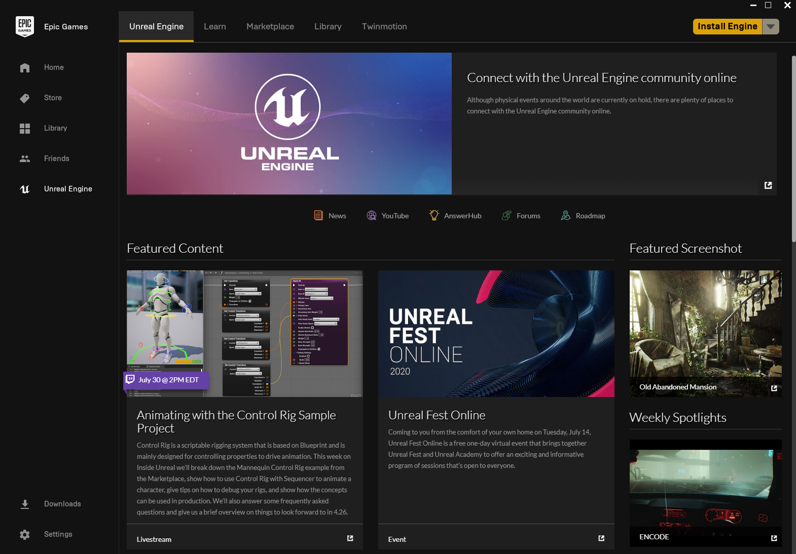
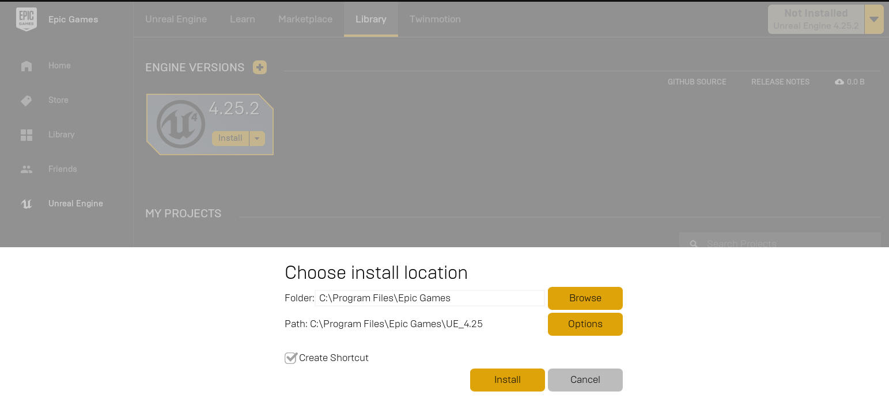

Install or Build Cosys-AirSim on Windows
Install Unreal Engine
- Download the Epic Games Launcher. While the Unreal Engine is open source and free to download, registration is still required.
- Run the Epic Games Launcher, open the
Unreal Enginetab on the left pane. Click on theInstallbutton on the top right, which should show the option to download Unreal Engine 5.X.X. Chose the install location to suit your needs, as shown in the images below. If you have multiple versions of Unreal installed then make sure the version you are using is set tocurrentby clicking down arrow next to the Launch button for the version.  
Build Cosys-AirSim
- Install Visual Studio 2022. Make sure to select Desktop Development with C++ and Windows 10/11 SDK 10.0.X (choose latest) and select the latest .NET Framework SDK under the 'Individual Components' tab while installing VS 2022. More info here.
- Start
Developer Command Prompt for VS 2022. - Clone the repo:
git clone https://github.com/Cosys-Lab/Cosys-AirSim.git, and go the AirSim directory bycd Cosys-AirSim. - Run
build.cmdfrom the command line. This will create ready to use plugin bits in theUnreal\Pluginsfolder that can be dropped into any Unreal project.
Build Unreal Project
Finally, you will need an Unreal project that hosts the environment for your vehicles. Make sure to close and re-open the Unreal Engine and the Epic Games Launcher before building your first environment if you haven't done so already. After restarting the Epic Games Launcher it will ask you to associate project file extensions with Unreal Engine, click on 'fix now' to fix it. Cosys-AirSim comes with a built-in "Blocks Environment" which you can use, or you can create your own. Please see setting up Unreal Environment.
Setup Remote Control (Multirotor only)
A remote control is required if you want to fly manually. See the remote control setup for more details.
Alternatively, you can use APIs for programmatic control or use the so-called Computer Vision mode to move around using the keyboard.
How to Use Cosys-AirSim
Once Cosys-AirSim is set up by following above steps, you can,
1. Navigate to folder Unreal\Environments\Blocks and run update_from_git.bat.
2. Double click on .sln file to load the Blocks project in Unreal\Environments\Blocks (or .sln file in your own custom Unreal project). If you don't see .sln file then you probably haven't completed steps in Build Unreal Project section above.
3. Select your Unreal project as Start Up project (for example, Blocks project) and make sure Build config is set to "Develop Editor" and x64.
4. After Unreal Editor loads, press Play button.
!!! tip Go to 'Edit->Editor Preferences', in the 'Search' box type 'CPU' and ensure that the 'Use Less CPU when in Background' is unchecked.
See Using APIs and settings.json for various options available.
FAQ
I get an error Il ‘P1’, version ‘X’, does not match ‘P2’, version ‘X’
This is caused by multiple versions of Visual Studio installed on the machine. The build script of Cosys-AirSim will use the latest versions it can find so need to make Unreal does the same.
Open or create a file called BuildConfiguration.xml in C:\Users\USERNAME\AppData\Roaming\Unreal Engine\UnrealBuildTool and add the following:
<?xml version="1.0" encoding="utf-8" ?>
<Configuration xmlns="https://www.unrealengine.com/BuildConfiguration">
<WindowsPlatform>
<CompilerVersion>Latest</CompilerVersion>
</WindowsPlatform>
</Configuration>
I get error C100 : An internal error has occurred in the compiler when running build.cmd
We have noticed this happening with VS version 15.9.0 and have checked-in a workaround in Cosys-AirSim code. If you have this VS version, please make sure to pull the latest Cosys-AirSim code.
I get error "'corecrt.h': No such file or directory" or "Windows SDK version 8.1 not found"
Very likely you don't have Windows SDK installed with Visual Studio.
How do I use PX4 firmware with Cosys-AirSim?
By default, Cosys-AirSim uses its own built-in firmware called simple_flight. There is no additional setup if you just want to go with it. If you want to switch to using PX4 instead then please see this guide.
I made changes in Visual Studio but there is no effect
Sometimes the Unreal + VS build system doesn't recompile if you make changes to only header files. To ensure a recompile, make some Unreal based cpp file "dirty" like AirSimGameMode.cpp.
Unreal still uses VS2015 or I'm getting some link error
Running several versions of VS can lead to issues when compiling UE projects. One problem that may arise is that UE will try to compile with an older version of VS which may or may not work. There are two settings in Unreal, one for for the engine and one for the project, to adjust the version of VS to be used. 1. Edit -> Editor preferences -> General -> Source code 2. Edit -> Project Settings -> Platforms -> Windows -> Toolchain ->CompilerVersion
In some cases, these settings will still not lead to the desired result and errors such as the following might be produced: LINK : fatal error LNK1181: cannot open input file 'ws2_32.lib'
To resolve such issues the following procedure can be applied: 1. Uninstall all old versions of VS using the VisualStudioUninstaller 2. Repair/Install VS2017 3. Restart machine and install Epic launcher and desired version of the engine